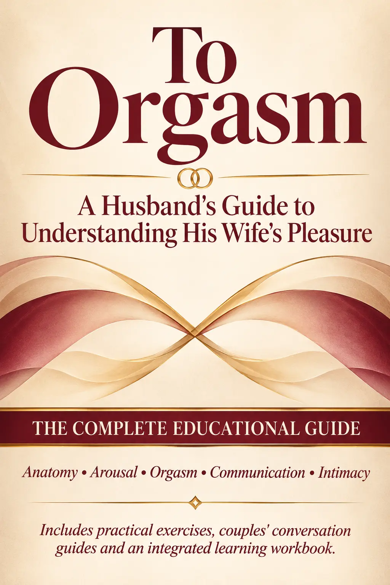

Less guessing
Replace assumptions with a better understanding of how her body and experience can differ from yours.
Intimacy is more than wanting to make your wife happy. It's understanding her body, her experience, and what makes her feel genuinely seen, heard, and fulfilled.

You may care deeply about your wife. You may want her to feel loved, desired, and satisfied. You may genuinely believe you're doing everything right.
But intimacy can still leave questions unanswered. You might not know what she experiences, what she finds comfortable, what helps her feel connected, or how to talk about the things neither of you has quite known how to express.
Good intentions matter. Understanding makes room for something deeper.
What if you understood more about her body, listened without defensiveness, and felt comfortable learning together? What if she never had to feel that her experience was an afterthought?
Not pressure. Not performance. Not expectations. Just two people learning to understand one another better.
A GUIDE TO UNDERSTANDING HER
This book was created for husbands who want to move beyond assumptions and understand female pleasure with greater clarity, patience, and confidence.
It brings together accessible educational explanations, practical guidance, and thoughtful exercises that help couples communicate and learn together.
Replace assumptions with a better understanding of how her body and experience can differ from yours.
Create room to discuss preferences, boundaries, questions, and feelings without making intimacy awkward.
Learn to pay attention to her experience, welcome feedback, and approach intimacy as something you discover together.
Make emotional closeness, respect, communication, and mutual satisfaction part of your shared experience.
This guide is for married adults who believe intimacy deserves understanding, communication, and care.
You don't need to have all the answers. You don't need to pretend you do. You simply need the willingness to learn, listen, and grow together.
Understanding her isn't about mastering a formula. It's about knowing the person you're sharing your life with.
Take the time to understand her experience. Start a better conversation. Make room for a more fulfilling intimate relationship.
Educational content for adults. Individual experiences vary; this guide does not promise a particular outcome.
It is an educational guide for husbands about female anatomy, arousal, orgasm, desire, communication, and building a more mutually fulfilling intimate relationship in marriage.
No. It is an educational publication. It focuses on anatomy, sexual health, communication, and relationship understanding rather than erotic entertainment.
After completing your purchase through Gumroad, you'll receive access to the digital ebook through Gumroad's delivery process.
No. Every woman and every relationship is different. The book offers education and practical guidance, not guaranteed outcomes or a universal formula.
Absolutely. Although it is written primarily for husbands, its exercises and conversation prompts can be explored together whenever both partners feel comfortable.
Discover a more thoughtful approach to intimacy.
Get your copy — $59 →